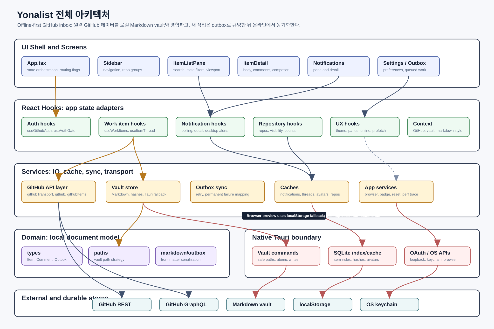
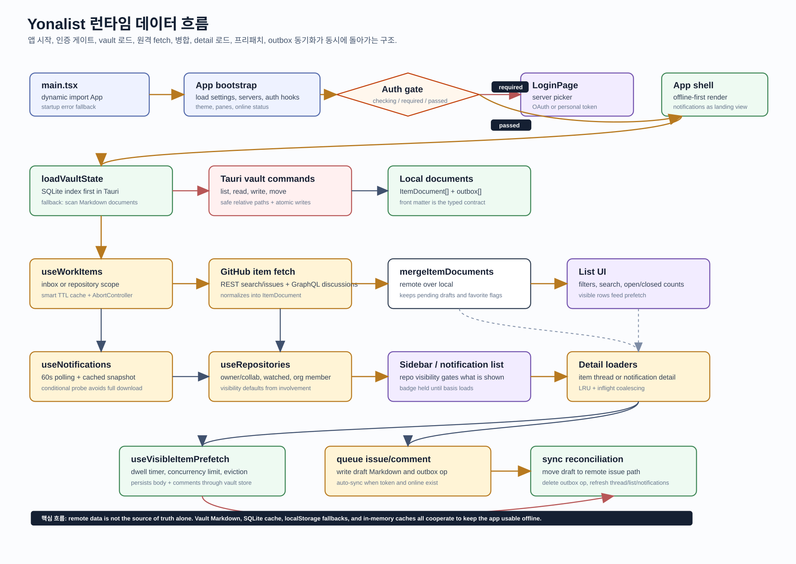
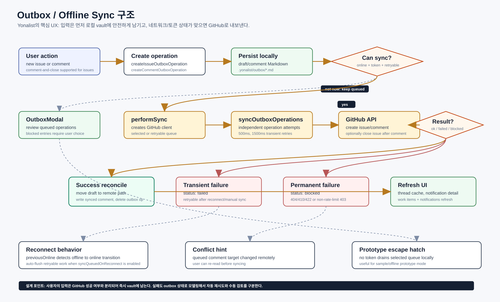
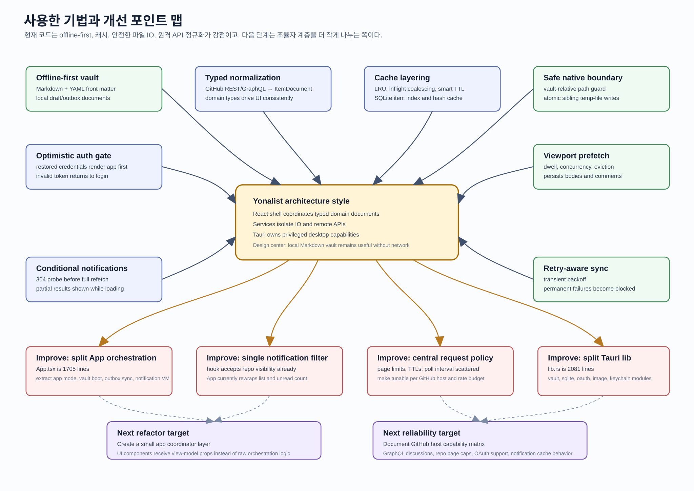

1. Overall Architecture

2. Runtime Data Flow

3. Outbox Sync Flow

4. Techniques and Improvements

전체 구조, 런타임 데이터 흐름, outbox 동기화, 사용 기법과 개선 포인트를 큰 이미지로 펼쳐 볼 수 있습니다.
이 자료는 제거 전 GitHub Inbox 구조를 기록한 역사 자료입니다. 현재 Yonalist 구조와 제거 결정은 2026-07-27 설계 문서를 따릅니다.



